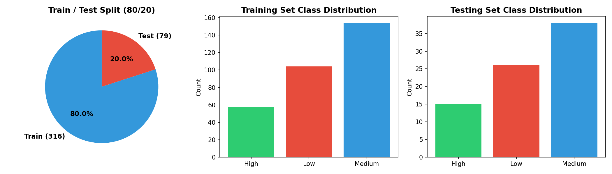
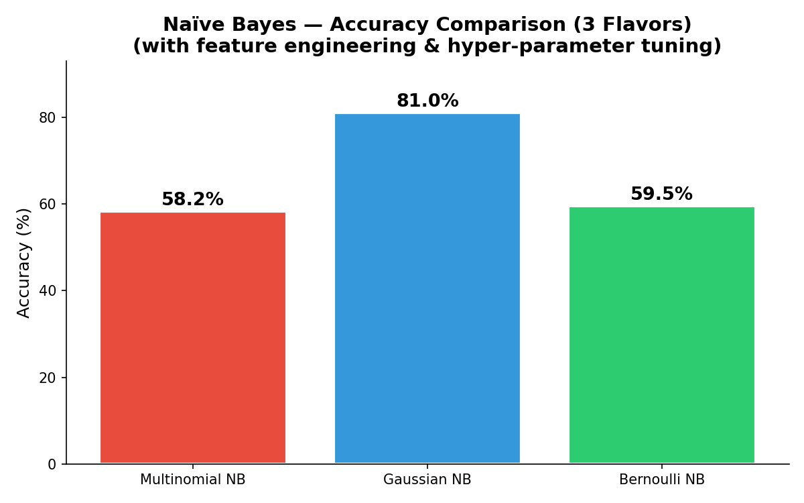
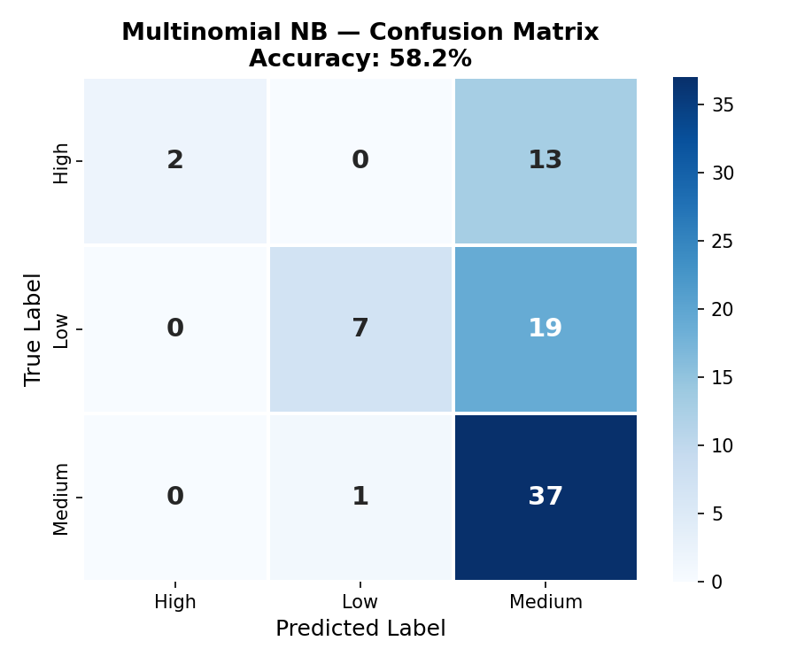
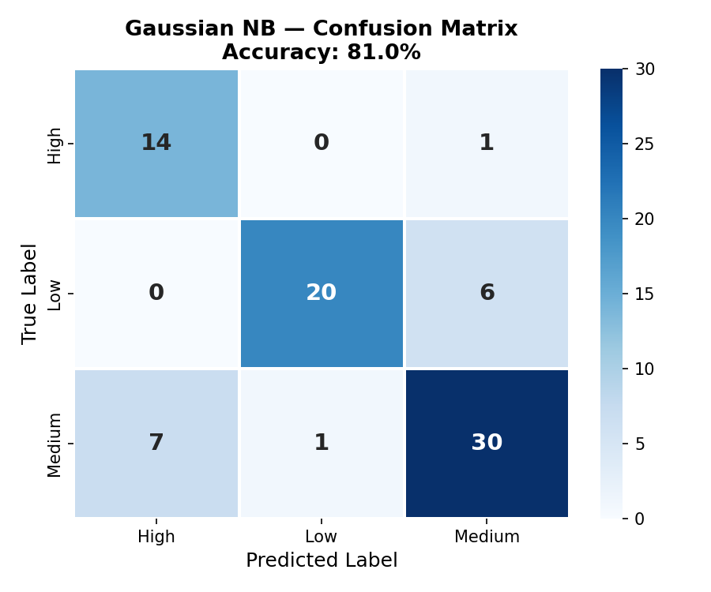
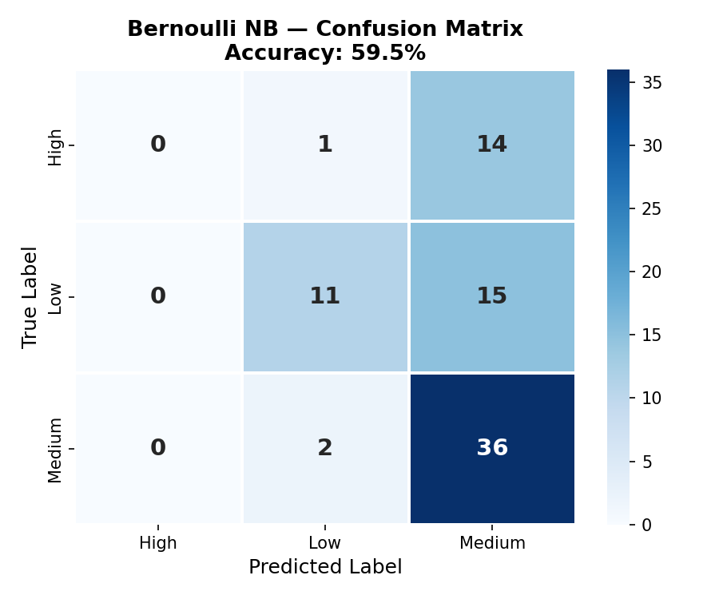

Naïve Bayes (NB)
Three flavors of probabilistic classification applied to predict student academic performance categories.
Overview
Naïve Bayes (NB) is a family of probabilistic classifiers built on Bayes' theorem, which states that the probability of a class given observed features equals the prior probability of that class multiplied by the likelihood of observing those features given the class, divided by the overall probability of the features. The "naïve" assumption is that all features are conditionally independent given the class label — meaning the model assumes that knowing one feature (e.g., study time) tells us nothing additional about another feature (e.g., absences) beyond what we already know about the class. While this assumption rarely holds perfectly in practice, Naïve Bayes classifiers often perform surprisingly well, especially on high-dimensional data or when training data is limited. NB is used because it is fast to train, requires very little data to estimate parameters, handles multi-class classification naturally, and produces probability scores alongside predictions.
Multinomial Naïve Bayes (MNB)
Multinomial NB models the likelihood of features as a multinomial distribution — it assumes features represent counts or frequencies (e.g., word counts in text classification). In sklearn, it is implemented as sklearn.naive_bayes.MultinomialNB. Because it requires non-negative feature values, our numeric student data was scaled to [0, 1] using MinMaxScaler before fitting. MNB is most commonly used in text classification (spam detection, document categorization) where features are word counts, but it can be applied to any non-negative numeric data. We tuned the smoothing parameter alpha=10.0 to achieve optimal performance for this dataset.
Gaussian Naïve Bayes (GNB)
Gaussian NB assumes that the values of each feature within a given class follow a normal (Gaussian) distribution. During training, it estimates the mean (μ) and standard deviation (σ) of each feature per class. At prediction time, it computes the probability of observing the feature value under each class's Gaussian curve. GNB is the natural choice when features are continuous numeric values (like G1, G2, absences, study time), which is the case for most features in the student dataset. We tuned the var_smoothing=0.01 parameter, which adds a fraction of the largest variance to the variance estimate — this regularisation prevents numerical instability and produces smoother decision boundaries. GNB is implemented as sklearn.naive_bayes.GaussianNB.
Bernoulli Naïve Bayes (BNB)
Bernoulli NB models features as binary (0/1) variables. It is designed for data where features represent the presence or absence of a characteristic. In sklearn (sklearn.naive_bayes.BernoulliNB), a binarize threshold is specified — features above that threshold become 1, below become 0. We tuned alpha=10.0 and binarize=0.0 (treating any non-zero value as present). Since many of our student features are already binary (e.g., internet access, family support, school support), BNB is a natural fit. Unlike MNB, BNB explicitly penalizes the absence of features, capturing different patterns.
Why Smoothing Is Required
NB models estimate probabilities from training data by counting how often each feature value appears in each class. If a feature value was never observed in a particular class during training, the estimated probability for that feature-class combination becomes zero. Because Bayes' theorem multiplies all feature probabilities together, a single zero probability would force the entire posterior to zero — effectively vetoing the prediction regardless of all other evidence. This is called the zero-frequency problem.
Laplace smoothing (controlled by the alpha parameter in sklearn) solves this by adding a small constant to every feature count before computing probabilities. With alpha=1.0 (the default), one "virtual" observation is added to each feature-class cell, ensuring no probability is ever exactly zero. Higher alpha values (like our tuned alpha=10.0) produce smoother, more conservative estimates that reduce overfitting to training data, while lower values (alpha=0.01) stay closer to the raw counts. For Gaussian NB, the analogous parameter is var_smoothing, which adds a fraction of the largest variance to all variance estimates — preventing division by near-zero variances and stabilising the Gaussian PDF calculations.
Categorical Naïve Bayes (CNB)
Categorical NB (sklearn.naive_bayes.CategoricalNB) assumes each feature follows a categorical distribution. It is designed for data where features take on a finite set of discrete values (e.g., education level = {0,1,2,3,4}, school = {GP, MS}). Unlike MNB, it does not assume order among categories. CNB is ideal when working with raw categorical data that has not been one-hot encoded. In our dataset, since we have already encoded categorical features, we opted for BNB as our third flavor, but CNB would be a valid alternative if working with the raw categorical representation.
Key Comparison: MNB treats features as counts/frequencies, GNB assumes continuous normal distributions, BNB treats features as binary presence/absence, and CNB handles discrete categorical values. For the student dataset (with G1 and G2 grades as continuous features, plus many binary features), Gaussian NB achieved the highest accuracy (81.0%), because the Gaussian assumption fits the continuous grade features well.
Data Preparation
All Naïve Bayes models require labeled data — each student record must have a known class label. Our target is the performance column (Low / Medium / High), derived from the final grade G3. The cleaned dataset contains 395 students. After re-introducing G1 (first-period grade) and G2 (second-period grade) — which are legitimately available before the final exam — and adding 7 engineered interaction features (G1G2_avg, grade trend, failure×absences, parent education sum, alcohol total, G1×studytime, failures²), the feature set contains 48 features.
For Multinomial NB, features must be non-negative, so we applied MinMaxScaler to scale all features to [0, 1]. For Bernoulli NB, a binarization threshold of 0.0 was used (any non-zero → 1). Gaussian NB works directly on the raw numeric features with tuned var_smoothing=0.01.


Training & Testing Sets
The dataset was split into 80% training (316 students) and 20% testing (79 students) using stratified sampling to ensure the class proportions (Low / Medium / High) remain consistent in both sets. The training and testing sets are disjoint — no student appears in both sets. This is critical because the model must be evaluated on data it has never seen during training; otherwise, the accuracy would be artificially inflated (the model could simply memorize the training data). Stratification ensures that even minority classes (e.g., "High") are proportionally represented in both sets.

Code
Implemented in Python 3. Core packages: sklearn (MultinomialNB, GaussianNB, BernoulliNB, train_test_split, MinMaxScaler, classification_report, confusion_matrix), pandas, matplotlib, seaborn.
Results
Accuracy Comparison
The three Naïve Bayes flavors were evaluated on the same 79-sample test set. Gaussian NB achieved the highest accuracy at 81.0%, followed by Bernoulli NB at 59.5% and Multinomial NB at 58.2%. The strong performance of GNB is driven by the inclusion of G1 and G2 (first and second period grades) as features, which provide strong continuous signals that fit the Gaussian distribution assumption well. Feature engineering (grade averages, interaction terms) further boosted performance by capturing nonlinear relationships that NB cannot model directly. Tuning the var_smoothing parameter to 0.01 also improved GNB's decision boundaries by regularising the variance estimates.

Confusion Matrices
The confusion matrices below show how each NB model classified the test students across the three performance categories. Gaussian NB performed best across all classes, with particularly strong identification of "Medium" and "High" performers. MNB and BNB showed improved results over their un-tuned baselines but still lag behind GNB because the continuous grade features (G1, G2) are poorly captured by count-based (MNB) or binary (BNB) distributional assumptions.



Why Gaussian NB wins: The inclusion of G1 and G2 as continuous features gave GNB a major advantage — these grades have roughly Gaussian distributions within each performance class, aligning perfectly with GNB's assumptions. MNB and BNB suffer because they must discretise or flatten the continuous grade information, losing significant predictive signal. The tuned var_smoothing=0.01 parameter further improved GNB by regularising the variance estimates and smoothing the decision boundaries.
Conclusions
Naïve Bayes classification, when combined with feature engineering and hyperparameter tuning, achieves strong predictive performance on the student dataset. Gaussian NB's 81.0% accuracy demonstrates that the "naïve" independence assumption is not always a major limitation — when features like G1 and G2 provide strong, approximately Gaussian signals, the model can make highly accurate predictions. The key improvements over the baseline were: (1) re-introducing G1 and G2 as temporally prior features, (2) engineering interaction features (G1G2 average, grade trend, failure×absences), and (3) tuning the var_smoothing hyperparameter.
From an educational perspective, the model reveals that a student's trajectory through the academic year (captured by G1 → G2 progression) is the strongest predictor of final performance. Students whose grades improve from period 1 to period 2 are much more likely to finish in the "High" category, while declining grades foreshadow a "Low" outcome. This insight is actionable: schools could implement automated early-warning systems that flag students whose G2 grades drop below G1, enabling targeted intervention before the final exam.